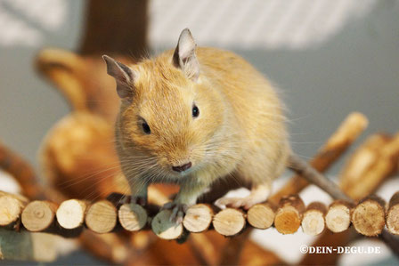
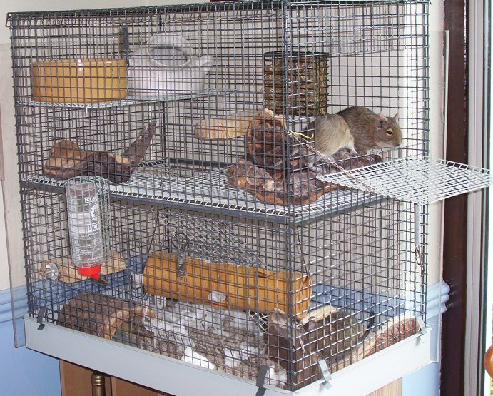

La cage d'un octodon ne peut pas se concevoir sans une roue, il faudra choisir le grand modèle prévu pour chinchilla de 28cm ou plus afin que votre compagnon soit à l'aise dans sa roue et que la taille respecte la courbure de son dos, les plus petit modele sont à éviter pour leur bien être. Préférez les pleine et grillagées car de nombreux accidents peuvent arriver. Pattes cassées, queues coupées, etc. Roues conseillées en 28cm.
L'accessoire primordial de l'habitat de l'octodon est une cabane, il est vital pour votre octodon de pouvoir se cacher quand il en a besoin et se reposer au calme, c'est rassurant et c'est indispensable à son épanouissement. Vous en trouverez de tout type, préférez toujours les grand modèle.